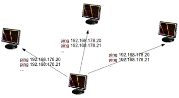

Threads in Python
Definition of a Thread
A Thread or a Thread of Execution is defined in computer science as the smallest unit that can be scheduled in an operating system. Threads are normally created by a fork of a computer script or program in two or more parallel (which is implemented on a single processor by multitasking) tasks. Threads are usually contained in processes. More than one thread can exist within the same process. These threads share the memory and the state of the process. In other words: They share the code or instructions and the values of its variables.
There are two different kind of threads:
- Kernel threads
- User-space Threads or user threads
In a certain way, user-space threads can be seen as an extension of the function concept of a programming language. So a thread user-space thread is similiar to a function or procedure call. But there are differences to regular functions, especially the return behaviour.
 Every process has at least one thread, i.e. the process itself. A process can start multiple threads.
The operating system executes these threads like parallel "processes". On a single processor machine, this
parallelism is achieved by thread scheduling or timeslicing.
Every process has at least one thread, i.e. the process itself. A process can start multiple threads.
The operating system executes these threads like parallel "processes". On a single processor machine, this
parallelism is achieved by thread scheduling or timeslicing.
Advantages of Threading:
- Multithreaded programs can run faster on computer systems with multiple CPUs, because theses threads can be executed truly concurrent.
- A program can remain responsive to input. This is true both on single and on multiple CPU
- Threads of a process can share the memory of global variables. If a global variable is changed in one thread, this change is valid for all threads. A thread can have local variables.
The handling of threads is simpler than the handling of processes for an operating system. That's why they are sometimes called light-weight process (LWP)
Threads in Python
There are two modules which support the usage of threads in Python:- thread
and - threading
Please note: The thread module has been considered as "deprecated" for quite a long time. Users have been encouraged to use the threading module instead. So,in Python 3 the module "thread" is not available anymore. But that's not really true: It has been renamed to "_thread" for backwards incompatibilities in Python3.
The module "thread" treats a thread as a function, while the module "threading" is implemented in an object oriented way, i.e. every thread corresponds to an object.
The thread Module
It's possible to execute functions in a separate thread with the module Thread. To do this, we can use the function thread.start_new_thread:thread.start_new_thread(function, args[, kwargs])
This methode starts a new thread and return its identifier. The thread executes the function "function" (function is a reference to a function) with the argument list args (which must be a list or a tuple). The optional kwargs argument specifies a dictionary of keyword arguments. When the function returns, the thread silently exits. When the function terminates with an unhandled exception, a stack trace is printed and then the thread exits (but other threads continue to run).
Example for a Thread in Python:
from thread import start_new_thread
def heron(a):
"""Calculates the square root of a"""
eps = 0.0000001
old = 1
new = 1
while True:
old,new = new, (new + a/new) / 2.0
print old, new
if abs(new - old) < eps:
break
return new
start_new_thread(heron,(99,))
start_new_thread(heron,(999,))
start_new_thread(heron,(1733,))
c = raw_input("Type something to quit.")
The raw_input() in the previous example is necessary, because otherwise
all the threads would be exited, if the main program finishes.
raw_input() waits until something has been typed in.
We expand the previous example with counters for the threads.
from thread import start_new_thread
num_threads = 0
def heron(a):
global num_threads
num_threads += 1
# code has been left out, see above
num_threads -= 1
return new
start_new_thread(heron,(99,))
start_new_thread(heron,(999,))
start_new_thread(heron,(1733,))
start_new_thread(heron,(17334,))
while num_threads > 0:
pass
The script above doesn't work the way we might expect it to work. What is wrong?
The problem is, that the final while loop will be reached even before one of the threads could have incremented the counter num_threads.
But there is another serious problem:
The problem arises by the assignments to num_thread
num_threads += 1and
num_threads -= 1These assignment statements are not atomic. Such an assignment consists of three actions:
- Reading the value of num_thread
- A new int instance will be incremented or decremented by 1
- the new value has to be assigned to num_threads
Errors like this happen in the case of increment assignments:
The first thread reads the variable num_threads, which still has the value 0. After having read this value, the thread is put to sleep by the operating system. Now it't the second thread's turn: It also reads the value of the variable num_threads, which is still 0, because the first thread has been put to sleep too early, i.e. before it had been able to increment its value by 1. Now the second thread is put to sleep. Now it't the third thread's turn, which again reads a 0, but the counter should have been 2 by now. Each of these threads assigns now the value 1 to the counter. Similiar problems occur with the decrement operation.
Solution
Problems of this kind can be solved by defining critical sections with lock objects. These sections will be treated atomically, i.e. during the execution of such a section a thread will not be interrupted or put to sleep.The methode thread.allocate_lock is used to create a new lock object:
lock_objekt = thread.allocate_lock()
The beginning of a critical section is tagged with
lock_object.acquire() and the end
with lock_object.release().
The solution with locks looks like this:
from thread import start_new_thread, allocate_lock
num_threads = 0
thread_started = False
lock = allocate_lock()
def heron(a):
global num_threads, thread_started
lock.acquire()
num_threads += 1
thread_started = True
lock.release()
...
lock.acquire()
num_threads -= 1
lock.release()
return new
start_new_thread(heron,(99,))
start_new_thread(heron,(999,))
start_new_thread(heron,(1733,))
while not thread_started:
pass
while num_threads > 0:
pass
threading Module
We want to introduce the threading module with an example. The Thread of the example doesn't do a lot, essentially it just sleeps for 5 seconds and then prints out a message:
import time
from threading import Thread
def sleeper(i):
print "thread %d sleeps for 5 seconds" % i
time.sleep(5)
print "thread %d woke up" % i
for i in range(10):
t = Thread(target=sleeper, args=(i,))
t.start()
Method of operation of the threding.Thread class: The class threading.Thread has a method start(),
which can start a Thread. It triggers off the method run(), which has to be overloaded.
The join() method makes sure that the main program waits until all threads have terminated.
The previous script returns the following output:
thread 0 sleeps for 5 seconds thread 1 sleeps for 5 seconds thread 2 sleeps for 5 seconds thread 3 sleeps for 5 seconds thread 4 sleeps for 5 seconds thread 5 sleeps for 5 seconds thread 6 sleeps for 5 seconds thread 7 sleeps for 5 seconds thread 8 sleeps for 5 seconds thread 9 sleeps for 5 seconds thread 1 woke up thread 0 woke up thread 3 woke up thread 2 woke up thread 5 woke up thread 9 woke up thread 8 woke up thread 7 woke up thread 6 woke up thread 4 woke upThe next example shows a thread, which determines, if a number is prime or not. The Thread is defined with the threading module:
import threading
class PrimeNumber(threading.Thread):
def __init__(self, number):
threading.Thread.__init__(self)
self.Number = number
def run(self):
counter = 2
while counter*counter < self.Number:
if self.Number % counter == 0:
print "%d is no prime number, because %d = %d * %d" % ( self.Number, self.Number, counter, self.Number / counter)
return
counter += 1
print "%d is a prime number" % self.Number
threads = []
while True:
input = long(raw_input("number: "))
if input < 1:
break
thread = PrimeNumber(input)
threads += [thread]
thread.start()
for x in threads:
x.join()
With locks it should look like this:
class PrimeNumber(threading.Thread):
prime_numbers = {}
lock = threading.Lock()
def __init__(self, number):
threading.Thread.__init__(self)
self.Number = number
PrimeNumber.lock.acquire()
PrimeNumber.prime_numbers[number] = "None"
PrimeNumber.lock.release()
def run(self):
counter = 2
res = True
while counter*counter < self.Number and res:
if self.Number % counter == 0:
res = False
counter += 1
PrimeNumber.lock.acquire()
PrimeNumber.prime_numbers[self.Number] = res
PrimeNumber.lock.release()
threads = []
while True:
input = long(raw_input("number: "))
if input < 1:
break
thread = PrimeNumber(input)
threads += [thread]
thread.start()
for x in threads:
x.join()
Pinging with Threads
 The previous examples of this chapter are of purely didactical interst, and have no practical applicabillity. The following example shows an interesting application, which can be easily used. If you want to determine in a local network which addresses are active or which computers are active, this script can be used. But you have to be careful with the range, because it can jam the network, if too many pings are started at once. Manually we would do the following for a network 192.168.178.x: We would ping the addresses 192.168.178.0, 192.168.178.1, 192.168.178.3 until 192.168.178.255 in turn. Every time we would have to wait a few seconds for the return values. This can be programmed in Python with a for loop over the address range of the IP addresses and a os.popen("ping -q -c2 "+ip,"r").A solution without threads is highly inefficient, because the script will have to wait for every ping.
Solution with threads:
import os, re
received_packages = re.compile(r"(\d) received")
status = ("no response","alive but losses","alive")
for suffix in range(20,30):
ip = "192.168.178."+str(suffix)
ping_out = os.popen("ping -q -c2 "+ip,"r")
print "... pinging ",ip
while True:
line = ping_out.readline()
if not line: break
n_received = received_packages.findall(line)
if n_received:
print ip + ": " + status[int(n_received[0])]
To understand this script, we have to look at the results of a ping on a shell command line:
$ ping -q -c2 192.168.178.26 PING 192.168.178.26 (192.168.178.26) 56(84) bytes of data. --- 192.168.178.26 ping statistics --- 2 packets transmitted, 2 received, 0% packet loss, time 999ms rtt min/avg/max/mdev = 0.022/0.032/0.042/0.010 msFalls ein Ping nicht zum Erfolg führt, gibt es folgende Ausgabe:
$ ping -q -c2 192.168.178.23 PING 192.168.178.23 (192.168.178.23) 56(84) bytes of data. --- 192.168.178.23 ping statistics --- 2 packets transmitted, 0 received, +2 errors, 100% packet loss, time 1006ms
This is the fast solution with threads:
import os, re, threading
class ip_check(threading.Thread):
def __init__ (self,ip):
threading.Thread.__init__(self)
self.ip = ip
self.__successful_pings = -1
def run(self):
ping_out = os.popen("ping -q -c2 "+self.ip,"r")
while True:
line = ping_out.readline()
if not line: break
n_received = re.findall(received_packages,line)
if n_received:
self.__successful_pings = int(n_received[0])
def status(self):
if self.__successful_pings == 0:
return "no response"
elif self.__successful_pings == 1:
return "alive, but 50 % package loss"
elif self.__successful_pings == 2:
return "alive"
else:
return "shouldn't occur"
received_packages = re.compile(r"(\d) received")
check_results = []
for suffix in range(20,70):
ip = "192.168.178."+str(suffix)
current = ip_check(ip)
check_results.append(current)
current.start()
for el in check_results:
el.join()
print "Status from ", el.ip,"is",el.status()